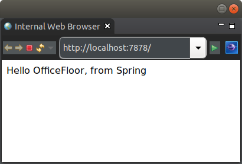

This tutorial demonstrates wiring Spring beans into an OfficeFloor application.
The following simple output is provided via a Spring bean injected into a WoOF template:
In terms of Inversion of Control, Spring focuses heavily on Dependency Injection. This makes Spring a very useful library of pre-built objects. In actuality Spring has provided great abstract APIs across various different vendors for various key services (e.g. Spring Data).
However, Spring is still primarily only a Dependency Injection engine. It does not provide Continuation Injection nor Thread Injection for modeling functionality and execution of your applications.
Therefore, rather than re-invent the wheel for these great APIs, OfficeFloor enables integrating Spring in as a SupplierSource (supplier of objects for dependency injection).
Similar to suppliers providing items to a business, a SupplierSource supplies objects to OfficeFloor dependency injection. This is a convenient means for Dependency Injection frameworks, such as Spring, to provide their objects to OfficeFloor.
The following is the object configuration for this tutorial:
<objects> <supplier source="SPRING"> <property name="configuration.class" value="net.officefloor.tutorial.springhttpserver.SpringBootConfiguration" /> </supplier> <managed-object class="net.officefloor.tutorial.springhttpserver.World" /> </objects>
The SpringSupplierSource is configured via it's SPRING alias.
Similar to Spring Boot applications, a configuration class loads the Spring beans. The configured class is as follows:
@SpringBootApplication
public class SpringBootConfiguration {
@Bean
public Other other() {
return SpringSupplierSource.getManagedObject(null, Other.class);
}
}
This provides the following single Spring bean for dependency injection via class path scanning:
@Component
public class HelloBean {
@Autowired
private Other other;
public String getIntroduction() {
return "Hello " + this.other.getName() + ", from Spring";
}
}
The SpringSupplierSource interogates all the registered Spring beans and makes them available for auto-wiring within OfficeFloor.
Therefore, the template logic to use the Spring beans is no different to WoOF dependency injection of ManagedObjectSource instances:
public class Template {
public HelloBean getTemplate(HelloBean bean) {
return bean;
}
}
with the very simple template to output the bean's introduction as follows:
<html>
<body>
<p>${introduction}</p>
</body>
</html>
In the previous section, the Spring bean required a dependency to be injected. This dependency is provided by an OfficeFloor ManagedObjectSource. This enables:
Looking at the Spring Boot configuration class again:
@SpringBootApplication
public class SpringBootConfiguration {
@Bean
public Other other() {
return SpringSupplierSource.getManagedObject(null, Other.class);
}
}
The dependency is provided from the SpringSupplierSource. This enables Spring factory methods to create beans from ManagedObjectSource instances within OfficeFloor.
From the application object configuration above, this resolves to the following:
public class World implements Other {
@Override
public String getName() {
return "OfficeFloor";
}
}
Note that exposed objects from OfficeFloor must be via an interface. The interface for this tutorial is:
public interface Other {
String getName();
}
Typically, Spring depending on OfficeFloor objects should be used sparingly. In most cases, dependency should be single direction of OfficeFloor depending on Spring beans. However, the above reverse in dependency direction is available for more complex situations (e.g. staged migration of Spring beans into ManagedObjectSource instances to avoid big bang changes).
Due to Spring Boot generating meta-data about the application to run, the following should be used to build the executable jar:
<plugin> <groupId>org.springframework.boot</groupId> <artifactId>spring-boot-maven-plugin</artifactId> <configuration> <mainClass>net.officefloor.OfficeFloorMain</mainClass> <classifier>exec</classifier> </configuration> <executions> <execution> <goals> <goal>repackage</goal> </goals> </execution> </executions> </plugin>
This ensures Spring Boot can generate the necessary meta-data, while still allowing OfficeFloor to manage the execution. It also keeps the original jar (via the classifier) to allow using as a dependency in larger applications.
Suppliers are integrated into OfficeFloor, so the application can be tested just like any other WoOF application:
@RegisterExtension
public MockWoofServerExtension server = new MockWoofServerExtension();
@Test
public void springHello() throws Exception {
// Send request for dynamic page
MockHttpResponse response = this.server.send(MockHttpServer.mockRequest("/"));
// Ensure request is successful
assertEquals(200, response.getStatus().getStatusCode(), "Request should be successful");
assertTrue(response.getEntity(null).contains("Hello OfficeFloor, from Spring"), "Incorrect response");
}
The next tutorial covers migrating databases on start up via Flyway.